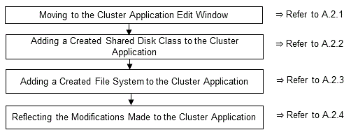

Follow the steps shown below to add a new file system to a cluster application. Refer to the PRIMECLUSTER Installation and Administration Guide for information on other modifications on cluster applications. Stop the RMS on all nodes when modifying cluster applications.
